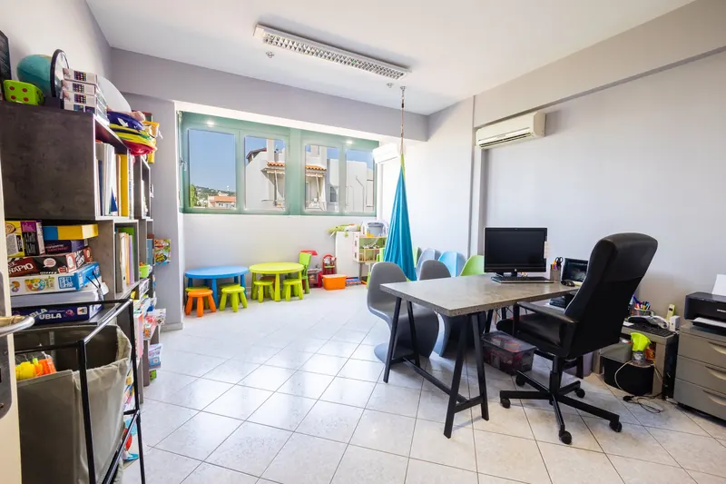

Ομάδες Κοινωνικών Δεξιοτήτων
Ομαδική παρέμβαση για την επικοινωνία, τη συνεργασία και την εφαρμογή δεξιοτήτων σε καθημερινές δραστηριότητες.
Τι περιλαμβάνει η ομάδαΕξάσκηση μέσα στην ομάδα
Οι ομάδες προσφέρουν ευκαιρίες αλληλεπίδρασης με άλλα παιδιά, με την υποστήριξη θεραπευτών. Μέσα από παιχνίδια, δραματοποίηση καθημερινών καταστάσεων και κοινές δραστηριότητες, κάθε παιδί εξασκείται σε συγκεκριμένους στόχους επικοινωνίας και συνεργασίας.
Η επιλογή ομαδικής παρέμβασης εξετάζεται με βάση τις ανάγκες και την ετοιμότητα συμμετοχής του παιδιού. Μας ενδιαφέρει να μπορεί να εκφράζει τις προτιμήσεις του, να ζητά βοήθεια και να συμμετέχει με τρόπο που σέβεται τόσο τις δικές του ανάγκες όσο και των άλλων.
Πώς γίνεται η αξιολόγησηΔεξιότητες που εξασκούνται στην ομάδα
Ανάλογα με τη σύνθεση της ομάδας, δίνουμε βάρος σε έναν ή περισσότερους από τους παρακάτω τομείς.
Επικοινωνία και διάλογος
Έναρξη συζήτησης, ανταλλαγή πληροφοριών, εναλλαγή σειράς και έκφραση αιτημάτων με τρόπο κατανοητό στους συνομιλητές.
Συνεργασία
Κοινός σχεδιασμός, κατανομή ρόλων, διαπραγμάτευση επιλογών και ολοκλήρωση μιας δραστηριότητας μαζί με άλλα παιδιά.
Συναισθήματα και διαφωνίες
Αναγνώριση και έκφραση συναισθημάτων, αναζήτηση βοήθειας και εξάσκηση σε τρόπους διαχείρισης διαφωνιών ή απογοήτευσης.
Αυτονομία και ευθύνη
Επιλογή δραστηριοτήτων, οργάνωση βημάτων και ανάληψη συγκεκριμένων αρμοδιοτήτων, με υποστήριξη ανάλογη των αναγκών του παιδιού.

Το «σπιτάκι»: εξάσκηση στην αυτόνομη διαβίωση
Επιλογή και οργάνωση
Σε χώρο που προσομοιάζει σε διαμέρισμα, τα παιδιά οργανώνουν κοινές δραστηριότητες. Εικόνες και ατομικά οπτικά προγράμματα βοηθούν να κατανοούν τι αναλαμβάνουν και με ποια σειρά.
Πρακτικές δραστηριότητες
Ψώνια, προετοιμασία φαγητού και τακτοποίηση δίνουν ευκαιρίες για συνεργασία και εξάσκηση καθημερινών δεξιοτήτων, με την καθοδήγηση των θεραπευτών.
Κοινός ελεύθερος χρόνος
Μουσική, κίνηση, βόλτα ή φύτεμα εντάσσονται στις επιλογές της ομάδας. Οι γονείς ενημερώνονται για τη συμμετοχή του παιδιού και τις δραστηριότητες στις οποίες εργάστηκε.
Συχνές ερωτήσεις
Πώς θα ξέρω αν μια ομάδα ταιριάζει στο παιδί μου;
Ξεκινάμε με συζήτηση για τις ανάγκες του παιδιού και εξετάζουμε αν η ομαδική παρέμβαση μπορεί να υποστηρίξει τους στόχους του. Η συμμετοχή δεν αποφασίζεται μόνο από την ηλικία ή από μια διάγνωση.
Πώς σχηματίζεται μια ομάδα και πότε ξεκινά;
Οι ομάδες σχηματίζονται με βάση την ηλικία και τους στόχους των παιδιών, με 3 έως 5 παιδιά και έναν ή δύο θεραπευτές. Μια ομάδα ξεκινά όταν συμπληρωθεί κατάλληλη σύνθεση. Μετά την πρώτη συνάντηση σας λέμε αν υπάρχει ομάδα που ταιριάζει στο παιδί σας, σε ποιο κέντρο και πότε. Αλλιώς, το παιδί μπαίνει σε λίστα ενδιαφέροντος μέχρι να σχηματιστεί η επόμενη.
Ενημερωθείτε για τις διαθέσιμες ομάδες
Μιλήστε μαζί μας για τις ανάγκες του παιδιού και τις δυνατότητες συμμετοχής σε κατάλληλη ομάδα.